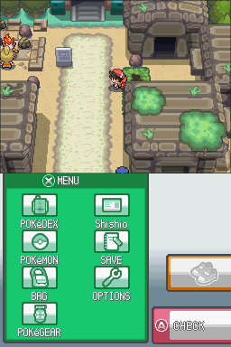
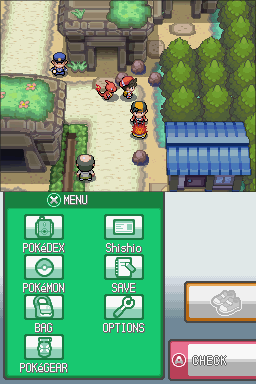
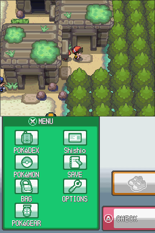
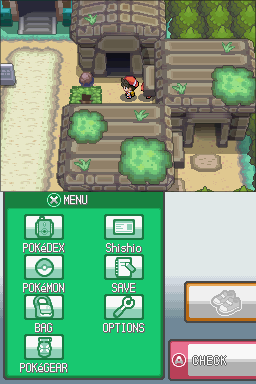

1. Ruins of Alph Research Center: เริ่มตามหา Molly
หลังเหตุการณ์ที่ Sprout Tower เมื่อ Gold และ Crystal ปรากฏตัวที่ Ruins of Alph ให้เข้า Research Center แล้วคุยกับผู้ช่วยที่ยืนใกล้ทางเข้า เขาจะบอกว่า Molly ลูกสาววัย 6 ขวบของ Professor Hale หายตัวไป
- ออกไปคุยกับ Gold ซึ่งยืนอยู่ทางตะวันตกเฉียงเหนือของประตู Research Center ถามเรื่อง Molly แล้วตอบ Yes
- คุยกับ Crystal ซึ่งอยู่ทางใต้ของอาคารเล็กตรงกลางซากปรักหักพัง ถามเรื่อง Molly แล้วตอบ Yes
- เมื่อคุยกับทั้งสองคนแล้ว Silver จะปรากฏในห้องปริศนา Kabuto ทางตะวันออกเฉียงเหนือ
ถ้า Silver ไม่อยู่ในห้อง ให้กลับไปคุยกับผู้ช่วยใน Research Center และตรวจให้แน่ใจว่าถามทั้ง Gold และ Crystal เรื่อง Molly แล้ว
2. Kabuto Chamber: ตามหา Silver
เข้าไปในห้องปริศนา Kabuto ทางตะวันออกเฉียงเหนือแล้วสู้กับ Silver เมื่อจบการต่อสู้ Unown จะทำให้ทุกคนตกลงไปยังห้องทางตันในโลกความฝัน
เส้นทางไปยังห้องปริศนา Kabuto: หญ้าสีเขียวข้างซากโบราณเป็นเพียงฉาก เดินทะลุไม่ได้ ให้เดินอ้อมซากปรักหักพังตามภาพทั้งสี่ขั้นตอนด้านล่าง
- เริ่มจากพงหญ้าที่ขวางทาง: เดินไปทางซ้ายเข้าสู่ทางหลัก แล้วมุ่งลงด้านล่าง โดยเดินผ่านด้านซ้ายของคนที่ยืนข้างซากขนาดใหญ่.

- อ้อมด้านใต้ของซาก: เมื่อถึงด้านล่างของซากขนาดใหญ่ ให้เลี้ยวขวาไปทางตะวันออก เข้าสู่ทางเดินข้างแนวต้นไม้.

- เดินขึ้นตามทางฝั่งตะวันออก: เดินขึ้นไปตามทางแคบระหว่างซากปรักหักพังกับต้นไม้ จนถึงทางเข้าห้อง Kabuto.

- เลี้ยวซ้ายเข้าประตู: เดินไปทางตะวันตก แล้วมุ่งขึ้นเข้าประตูห้องปริศนา Kabuto ซึ่งเป็นจุดที่จะพบ Silver.

3. ห้องความฝัน: คำถาม “Right, Idol?” และการพบ Entei
เมื่อทุกคนตกลงมาในห้องทางตัน คุณจะพบรูปปั้นและไม่สามารถออกไปได้ตามปกติ ลองใช้ Escape Rope, Dig หรือ Fly ก็ไม่สำเร็จ
- คุยกับรูปปั้นและเลือกคำตอบที่คิดว่าใช่ คำตอบแรก ๆ จะไม่ทำให้เกิดอะไรขึ้น
- คุยต่อจนมีตัวเลือกใหม่ปรากฏว่า “I don’t know either” ให้เลือกตัวเลือกนี้
- Molly และ Entei จะปรากฏ จากนั้นเข้าสู่การต่อสู้กับ Entei ตามเนื้อเรื่อง
- หลังฉากต่อสู้ ให้ตรวจรูปปั้นทางขวาแล้วตอบ Yes เพื่อสัมผัสรูปปั้นและเข้าสู่โลกความฝัน
อย่าพยายามใช้ท่าหนีหรือไอเทมเพื่อออกจากห้อง เพราะทางออกจะเปิดผ่านบทสนทนาและรูปปั้นเท่านั้น
4. โลกความฝัน: ช่วยเพื่อนทั้งสามคน
ในโลกความฝัน Molly ที่เป็นร่างจำลองจะท้าสู้ก่อน หลังจากนั้นคุณต้องช่วยเพื่อนทั้งสามคนด้วยการต่อสู้แบบ Multi Battle ตามลำดับ
| ลำดับ | ตำแหน่ง | สิ่งที่ต้องทำ |
|---|---|---|
| 1 | ทางเหนือ | ร่วมทีมกับ Silver และชนะการต่อสู้แบบ Multi Battle |
| 2 | บริเวณตรงกลาง | ร่วมทีมกับ Gold และชนะการต่อสู้แบบ Multi Battle |
| 3 | ทางใต้ | ร่วมทีมกับ Crystal และชนะการต่อสู้แบบ Multi Battle |
เมื่อชนะครบทั้งสามคน ให้ไปยังบันไดที่ทอดขึ้นสู่ท้องฟ้า ถ้ายังขึ้นไม่ได้และมีข้อความว่า “Let’s wait until everyone’s here” แสดงว่ายังมีเพื่อนคนใดคนหนึ่งที่ยังไม่ได้ช่วย
5. บันไดสู่ท้องฟ้า: การต่อสู้ครั้งสุดท้ายและ Unown Report
- เมื่อทุกคนมารวมตัวกัน ให้ปีนบันไดขึ้นไป Entei จะโจมตีและทีมของคุณจะได้การฟื้นฟูเต็มหนึ่งครั้ง
- ต่อสู้แบบ Double Battle กับทีมของ Entei สองครั้งติดต่อกัน โดยโปเกมอนของฝ่ายตรงข้ามจะถูกส่งลงสนามครั้งละสองตัว
- ชนะทั้งสองไฟต์แล้ว Molly จะยอมออกจากโลกความฝัน
- กลับไปยัง Ruins of Alph Research Center แล้วคุยกับผู้ช่วยเพื่อรับ Unown Report
ผลต่อโลก: คนงานทางรถไฟบน Route 32 ซึ่งอยู่ทางตะวันออกเฉียงเหนือของเส้นทางจะออกจากพื้นที่หลังจบเควสต์ ถ้าทำรายงาน Unown หาย ผู้ช่วยใน Research Center สามารถมอบเล่มใหม่ให้ได้
6. Ruins of Alph: แก้ปริศนาภาพในห้องทั้ง 4
แต่ละห้องมีแผ่นหินภาพโปเกมอนอยู่กลางห้อง ให้ตรวจแผ่นหินแล้วหมุนและเลื่อนชิ้นส่วนจนภาพสมบูรณ์ เมื่อแก้สำเร็จ พื้นจะเปิดและคุณตกลงไปยัง Underground Hall ซึ่งมี Unown ปรากฏให้พบ
| ห้อง | ภาพที่ต้องต่อ | หมายเหตุ |
|---|---|---|
| ตะวันออกเฉียงเหนือ | Kabuto | ห้องที่มีนักวิจัย และเกี่ยวข้องกับฉาก Silver |
| ตะวันออกเฉียงใต้ | Aerodactyl | ห้องสำหรับปริศนา Aerodactyl |
| ตะวันตกเฉียงใต้ | Omanyte | ห้องสำหรับปริศนา Omanyte |
| ตะวันตกเฉียงเหนือ | Ho-Oh | ควรรอแก้จนกว่าจะจบเควสต์ Molly |
การแก้ปริศนาภาพจะปลดล็อก Unown ใน Underground Hall แต่ไม่ให้ไอเทมรางวัลอื่นโดยตรง
7. เปิดกำแพงลับหลังห้องปริศนา
ยืนชิดกำแพงด้านหลังของห้อง หันหน้าเข้าหากำแพง แล้วใช้ไอเทม/ท่าที่กำหนด กำแพงจะพังและเปิดทางไปยังโถงโลกความฝันเดียวกับที่ใช้ในเควสต์ Molly
| ห้อง | วิธีเปิดกำแพง |
|---|---|
| Kabuto | ใช้ Escape Rope จากกระเป๋า ขณะยืนหันหน้าเข้ากำแพง |
| Aerodactyl | ใช้ Flash จากเมนู Pokémon ขณะหันหน้าเข้ากำแพง |
| Omanyte | ใช้ Water Stone จากกระเป๋า ขณะยืนชิดกำแพง |
| Ho-Oh | ตรวจสอบกำแพงโดยมี Ho-Oh อยู่ในทีม |
การเปิดกำแพงไม่ทำให้ Escape Rope พาคุณออกจากถ้ำ คุณจะยังอยู่ในห้องเดิมก่อนเข้าสู่โถงลับ กำแพงทั้งสี่ห้องเชื่อมไปยังพื้นที่เดียวกัน และประตูด้านล่างของโถงจะพากลับไปห้อง Kabuto
กำแพงด้านหลังห้อง Kabuto จะปิดอีกครั้งเมื่อจบเควสต์ Molly ถ้าต้องการกลับไปยังโลกความฝันเพื่อเควสต์หลังเกม ให้เปิดกำแพงใหม่ด้วยวิธีข้างต้น
8. เด็กหญิงที่เห็นใบหน้าตัวเองในรูปปั้น → Rock Incense
ทางฝั่งตะวันตกของ Ruins of Alph ใกล้ทางเหนือของอาคารเล็กกลางซากปรักหักพัง จะพบเด็กหญิงที่หัวเข่าถลอก
- คุยกับเธอและตอบ Yes เมื่อถามว่ามี Potion ให้ยืมหรือไม่ ต้องมี Potion อยู่ในกระเป๋าไอเทม เธอจะรับ Potion แล้วขอให้ช่วยตรวจสอบว่าทำไมใบหน้าของเธอจึงปรากฏบนรูปปั้นใต้ดิน
- เข้าอาคารเล็กตรงกลาง Ruins of Alph แล้วลงไป Underground Hall
- ตรวจรูปปั้นตัวที่ 4 จากซ้ายในแถวบน ใบหน้าของตัวละครผู้เล่นจะปรากฏขึ้น เลือก Yes เพื่อสัมผัสรูปปั้น
- เริ่มต่อสู้กับ Bronzor ป่า Lv. 25 จะจับ ปราบ หรือหนีก็ได้
รางวัล: Rock Incense เมื่อทำเหตุการณ์ครบตามลำดับ ถ้าไม่มี Potion แล้วตอบ Yes เด็กจะรู้ทันว่าไม่มีของ หรือถ้าตอบ No ก็กลับมาได้คุยใหม่ได้
9. เควสต์เสริมและผู้สอนท่าใน Ruins of Alph
- เจ้าของ Infernape: อยู่ทางตะวันตกเฉียงใต้ของประตู Route 36 ทางเหนือของซากปรักหักพัง คุยกับเขาแล้วตอบ Yes เพื่อเลือก Single หรือ Double Battle ถ้าชนะครั้งแรกจะได้ Power Bracer สามารถสู้ซ้ำได้แต่ไม่มีรางวัลเพิ่ม
- ผู้สอน Ancient Power: อยู่มุมตะวันออกเฉียงใต้ของ Ruins of Alph กับ Yanmega สอน Ancient Power โดยใช้ Rare Bone 1 ชิ้นต่อครั้ง สำหรับโปเกมอนที่เรียนท่านี้ได้
- Professor Hale: หลังช่วย Professor Hale จากฐาน Team Rocket ที่ Mahogany และเขากลับมาอยู่กับ Molly ให้คุยกับเขาใน Research Center เพื่อรับคำใบ้ตำแหน่งโปเกมอนในตำนาน เช่น Legendary Birds, Legendary Beasts, Regis, Mewtwo, Mew, Ho-Oh, Lugia, Groudon, Kyogre, Rayquaza, Dialga, Palkia, Giratina, Regigigas, Arceus, Shaymin, Celebi, Deoxys, Jirachi, Heatran, Darkrai, Cresselia, Manaphy และ Phione
- หลัง Hall of Fame รอบสุดท้าย: Professor Hale จะพา Molly ไปที่ Burned Tower ใน Ecruteak ถ้าต้องการพบพวกเขา ให้กลับไปคุยกับผู้ช่วยที่ Research Center เพื่อถามตำแหน่ง
10. กลับไปยังวิหาร Arceus (Sinjoh Ruins)
เหตุการณ์นี้ต่อจาก Ritual Shrine บน Seven Island เมื่อ Team Rocket ขโมย Azure Flute ไป ผู้ดูแลศาลเจ้าจะส่งคุณไปยัง Ruins of Alph
- เปิดกำแพงด้านหลังห้องปริศนาอีกครั้ง แล้วเข้าสู่โถงโลกความฝันที่เคยพบ Molly และ Entei
- เดินไปยังปลายโถงที่มีรูปปั้นหิน ทางตะวันตกของประตูวิหาร จะพบ Giovanni, Cyrus, Charon และ Archer รออยู่
- Giovanni จะเล่น Azure Flute และพาทุกคนไปยังวิหารของ Arceus หรือ Sinjoh Ruins
ถ้าแพ้การต่อสู้ใดในฉากนี้ จะหมดสติและเมื่อกลับมาที่รูปปั้น เหตุการณ์จะเริ่มใหม่
11. บั๊กและข้อควรทราบเกี่ยวกับ Ruins of Alph
- Unown Report: นักวิจัยใน Research Center จะไม่บันทึกโน้ตเพิ่มเติมใน Unown Report ตามปกติ เขาจะพูดเพียงว่าซากปรักหักพังมีอายุประมาณ 1,500 ปี เป็นข้อจำกัดของ ROM เวอร์ชันนี้
- ห้องลับหลังผนัง: ห้องที่เคยมีอักษร Unown อยู่ในข้อมูลเกม แต่กำแพงในเวอร์ชันนี้พาไปยังโถงโลกความฝันแทน จึงไม่มีทางเข้าถึงห้องเก่าตามเกมต้นฉบับ
- Ho-Oh panel: อย่าแก้ก่อนจบเนื้อเรื่อง Molly เพราะอาจทำให้ Silver และ Croconaw อยู่ที่บันไดตั้งแต่แรก และฉากต่อสู้ในโลกความฝันถูกข้าม
- Island Forest: มีโปเกมอนป่าให้พบได้ตั้งแต่เริ่ม ไม่จำเป็นต้องแก้ปริศนา Ruins of Alph ก่อน
- Azure Flute: การกลับไปยัง Sinjoh Ruins หลัง Hall of Fame ถูกล็อกด้วยบั๊กการคืนไอเทม ไม่ใช่สิ่งที่ผู้เล่นทำผิดลำดับ
แหล่งอ้างอิง: Known Issues ↗ · Dungeons and common events ↗
Post-Gameเนื้อเรื่องหลังเกม
เควสต์ที่ต้องรอหลังเข้า Hall of Fame ครั้งสุดท้าย ไม่ต้องทำระหว่างเล่นเนื้อเรื่อง · 1 เควสต์
12. Entei ในโลกความฝันหลังจบเกม
หลังพบ Professor Hale และ Molly ที่ Burned Tower แล้ว Entei จะกลับไปอยู่ในห้องทางตันด้านตะวันตกของโถงความฝัน ซึ่งเป็นสถานที่ที่เคยพบมันในเนื้อเรื่องหลัก
- เปิดกำแพงหลังห้องปริศนาใดก็ได้เพื่อเข้าสู่โถงโลกความฝัน
- เดินผ่านรูปปั้นเพื่อกลับไปยังห้องที่พบ Entei ครั้งแรก แล้วเดินไปทางตะวันตกของห้องจนถึงทางตัน
- เลือก “Battle Entei?” → Yes เพื่อเริ่มต่อสู้กับ Entei ป่า Lv. 90
หมายเหตุด้านความถูกต้อง
- แปลและเรียบเรียงจาก Origin HeartGold English Guide v4.0.3 โดยคงชื่อสถานที่ ตัวละคร ไอเทม ท่า และโปเกมอนเป็นภาษาอังกฤษเพื่อค้นหาในเกมได้ง่าย
- เนื้อหานี้แยกขั้นตอนเนื้อเรื่องหลัก ปริศนาในห้อง และเควสต์หลังเกมออกจากกัน เพื่อไม่ให้สับสนระหว่างเส้นทางปกติกับเนื้อหาที่เปิดภายหลัง
- ส่วนที่คู่มือต้นฉบับระบุว่าเป็นบั๊กหรือยังไม่ได้ทดสอบ จะระบุเป็นข้อควรทราบ ไม่สรุปว่าเป็นวิธีเล่นที่รับประกันผล
แหล่งอ้างอิงหลัก: Cherrygrove City to Azalea Town ↗ · Dungeons and common events ↗